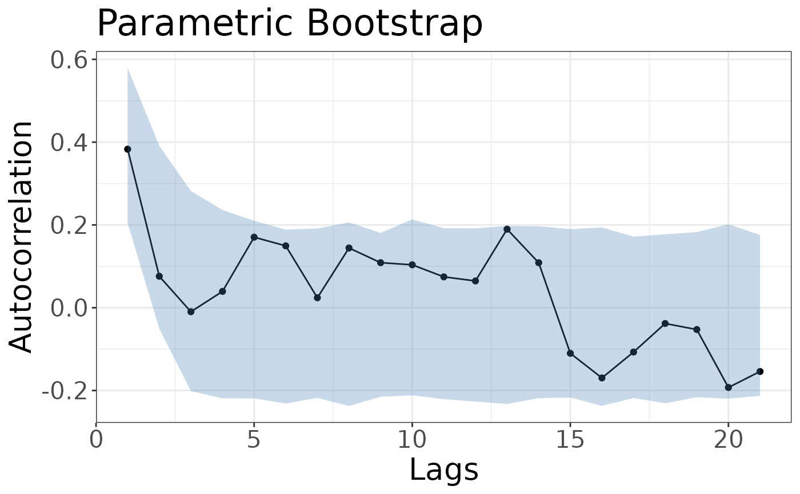

Model checking procedure emphasising reproducibility in fitted models, as proposed by Tsay (1992).
Usage
cocoBoot(
coco,
numb.lags = 21,
rep.Bootstrap = 1000,
conf.alpha = 0.05,
julia = FALSE,
julia_seed = NULL
)Arguments
- coco
An object of class coco
- numb.lags
Number of lags for which to compute sample autocorrelations (default: 21).
- rep.Bootstrap
Number of bootstrap replicates to use (default: 1000)
- conf.alpha
\(100(1-\code{conf.alpha})\%\) probability interval for the acceptance envelopes (default: 0.05)
- julia
if TRUE, the bootstrap is run with julia (default: FALSE)
- julia_seed
Seed for the julia implementation. Only used if julia equals TRUE
Value
an object of class cocoBoot. It contains the bootstrapped confidence intervals of the autocorrelations and information on the model specifications.
Details
Bootstrap-generated acceptance envelopes for the autocorrelation function provides an overall evaluation by comparing it with the sample autocorrelation function in a joint plot.
References
Tsay, R. S. (1992) Model checking via parametric bootstraps in time series analysis. Applied Statistics 41, 1–15.
Examples
lambda <- 1
alpha <- 0.4
set.seed(12345)
data <- cocoSim(order = 1, type = "Poisson", par = c(lambda, alpha), length = 100)
fit <- cocoReg(order = 1, type = "Poisson", data = data)
# bootstrap model assessment - R implementation
boot_r <- cocoBoot(fit, rep.Bootstrap=400)
plot(boot_r)
#> Warning: `aes_string()` was deprecated in ggplot2 3.0.0.
#> ℹ Please use tidy evaluation idioms with `aes()`.
#> ℹ See also `vignette("ggplot2-in-packages")` for more information.
#> ℹ The deprecated feature was likely used in the coconots package.
#> Please report the issue at <https://github.com/manuhuth/coconots/issues>.
